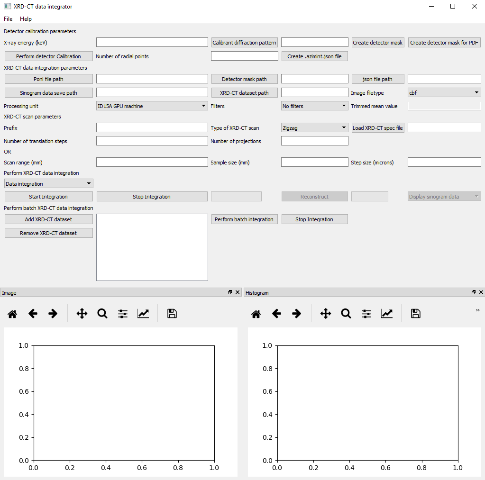

Integrator tutorial¶
Currently the Integrator GUI is used to process X-ray diffraction/scattering computed tomography data collected at beamline ID15A of the ESRF. The main advantages of this GUI over all other competing softwares are:
- It allows for real-time visualisation of the acquired diffraction/scattering tomography data. This is crucial when one performs an in situ experiment as it allows to take quick decisions rather than having to wait till the end of the scan. The success of many dynamic experiments depend on this functionality.
- The diffraction scattered data can be treated with filters. These contain:
- A median filters
- A trimmed mean filters
- A new superior filter based on an adaptive standard deviation approach
- It can handle tomographic data acquired with different acquition strategies:
- Conventional zigzag approach
- Interlaced approach
- Continuous rotation-translation approach
- Allows for batch processing of multiple tomographic datasets simultaneously. This feature is typically used after the in situ experiment.
The GUI is shown in the following image:
All the parameters can be saved as a .json file (File->Save integration parameter file).
Such a file can also be imported later. This saves a lot of time as all the boxes are filled automatically.
As a rule of thumb, the order of filling the boxes is from top to bottom and from left to right.
There are four main panels in the Integrator GUI:
- Detector calibration parameters panel
- XRD-CT data integration parameters panel
- XRD-CT scan parameters panel
- XRD-CT data integration panel
Detector calibration parameters panel¶
This panel is typically updated once per experiment (but not necessarily) as it focuses on the parameters used to perform the detector calibation. It is strongly suggested that the panel is filled with the following order:
- X-ray energy (keV): The energy of the monochromatic X-ray beam in keV (e.g. 90)
- Calibrant diffraction pattern: Interactively provide the path for the calibrant diffraction pattern
- Create detector mask: Create a mask for the detector using the pyFAI-drawmask package
- Perform detector calibration: Perform the calibration of the Pilatus 2M detector using the pyFAI-calib package
- Number of radial points: The number of bins used for the integrated diffraction patterns (e.g. 2000)
- Create .azimint.json file: Creates a .azimint.json file containing all the information regarding the detector calibration. This is also necessary for the multi-GPU ID15A PC.
XRD-CT data integration parameters panel¶
This panel focuses on the experimental parameters used for the diffraction/scattering tomography experiment. It is strongly suggested that the panel is filled with the following order:
- Poni file path: Interactively provide the path for the .poni file created during the detector calibration process
- Detector mask path: Interactively provide the path for the edf mask file created during the detector calibration process
- json path: Interactively provide the path for the .azimint.json file created during the detector calibration process
- Sinogram data save path: Interactively provide the path to be used for saving the integrated data
- XRD-CT dataset path: Interactively provide the path to the experimental data by selecting the appropriate folder
- Image filetype: Choose between cbf and edf files
- Processing unit: There are three options including CPU, GPU and the ID15A GPU dedicated PC
- Filters: Filter to be used during the integration of the 2D diffraction patterns. Options include no filter, median, trimmed mean and adaptivr standard deviation filter.
XRD-CT scan parameters panel¶
Most of the values in this panel are filled automatically but the user can also insert the values manually. It is strongly suggested that the panel is filled with the following order:
- Prefix: The prefix used in the files (images) created during the tomographic scan. Typically this is the same as the correspong folder name.
- Type of XRD-CT scan: The type of data acquisition strategy followed during the tomographic scan. Options are: zigzag, interlaced and continuous rotation-translation
- Load XRD-CT spec file: Interactively provide the path for the spec file that contains the information regarding the motor positions during the tomographic scan.
- Number of translation steps: The number of translation positions used during the tomographic scan
- Number of projections: The number of angles used during the tomographic scan
- Scan range (mm): The scan range (in mm) used during the tomographic scan. Typically this is larger than the sample size.
- Sample size (mm): The sample size (in mm) used during the tomographic scan. This calculates the number of angles to be used during the tomographic scan.
- Step size (mm): The translation step size (in mm).
XRD-CT data integration panel¶
This is the final panel and is used to perform the integration of the XRD-CT data. There are two main options:
- Data integration: The selected folder will be processed and the tomographic data will be saved as a 2D matrix. This 2D matrix can then need to be opened by the MultiTool GUI which will automatically reshape it to form the sinogram data volume.
- Data integration with live protting: This options enables the live visualisation functionality of the GUI. The diffraction data will be integrated and the results will be displayed live. The data are also reshaped into the sinogram volume in real-time. This allows the exploration of the data while they are neing acquired.
Finally, there is the option to batch process multiple datasets simultaneously. In practise, up to five datasets should be processed at the same time. The user can select multiple folders and perform the batch processing. A progress bar is generated for each dataset so that the user can keep track of the overall progress.